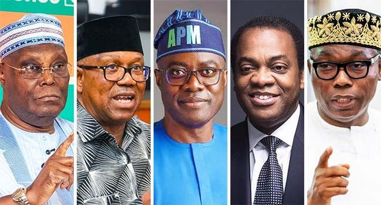

Opposition Sets A Signing Date, But The Parties Still Want Different Things

Nigeria’s opposition coalition has set a date for its next step: a summit on 23 November at the NAF Conference Centre in Abuja. Participating parties are expected to sign a National Covenant for Democratic Renewal and a Framework for Opposition Unity, and adopt a National Reform Programme. The announcement gives a timetable for cooperation, but the documents have yet to be adopted and no common presidential arrangement has been confirmed.
The Coalition for Democracy, formerly G100, has proposed protecting votes at polling units as the parties’ first shared undertaking. That could provide a focus for cooperation even if the parties continue to back separate candidates. However, no public evidence has established joint funding, shared polling-agent deployment, functioning state committees or common operational procedures.
Recent reports name the ADC, APM, NDC, PDP, PRP and SDP as participants. Earlier coverage also listed the DLA, NRM and YPP, as well as specifying factional participation by the PDP. The shorter list does not establish that omitted parties have withdrawn. The summit will need to clarify who is represented and which participants have authority to make commitments.
The parties’ stated positions also indicate that cooperation has not settled the presidential contest. The NDC’s Osa Director said the party preferred that opposition figures unite around Peter Obi and Rabiu Kwankwaso, while he could not confirm NDC involvement in reported Atiku Abubakar–Seyi Makinde negotiations. ADC representatives have confirmed opposition engagement but not a specific agreement with Makinde; reports of compromises have relied on unnamed sources. The APM has described that alliance as unfinished, while Makinde’s campaign says he is running to win and would serve one term.
Other participants have their own unresolved considerations. The PRP has expressed conditional willingness to respect a democratically agreed opposition choice, while rejecting the absorption of its party structures. The SDP is preparing its own campaign mobilisation, and a spokesman for the Turaki-led PDP faction says its candidates remain committed to cooperation. Neither position establishes a withdrawal or a binding commitment by the broader party. Attendance, authorised signatures, publication of the documents and evidence that instructions reach local organisations will help show whether the summit produces an electoral alliance or only continued engagement.
Source: Channels TV